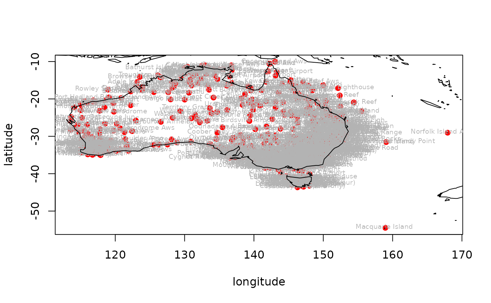

R/stations_ogimet.R
stations_ogimet.RdReturns a list of meteorological stations with their coordinates from the Ogimet webpage. The returned list is valid only for a given day
stations_ogimet(
country = "United+Kingdom",
date = Sys.Date(),
add_map = FALSE,
allow_failure = TRUE
)country name; for more than two words they need to be separated with a plus character (e.g. "United+Kingdom")
a day when measurements were done in all available locations
logical - whether to draw a map with downloaded metadata (requires maps/mapdata packages)
logical - whether to proceed or stop on failure. By default set to TRUE (i.e. don't stop on error). For debugging purposes change to FALSE
A data.frame with columns describing the synoptic stations in selected countries where each row represent a statation.
If add_map = TRUE additional map of downloaded data is visualized.
# \donttest{
stations_ogimet(country = "Australia", add_map = TRUE)
#> [1] "http://ogimet.com/cgi-bin/gsynres?lang=en&state=Australia&osum=no&fmt=html&ord=REV&ano=2022&mes=10&day=05&hora=06&ndays=1&Send=send"
#> /tmp/RtmpxqLddC/file18260fc0de9
#> Warning: NAs introduced by coercion
#> Warning: NAs introduced by coercion

#> wmo_id station_names lon lat alt
#> 1 94100 Kalumburu 126.6333 -14.30001 29
#> 2 94102 Troughton Island W. A. 126.1500 -13.75001 6
#> 3 94103 Browse Island Aws 123.5333 -14.11667 4
#> 4 94105 Noonamah Airstrip 131.0333 -12.60001 18
#> 5 94106 Ngukurr Aws 134.7333 -14.71668 12
#> 6 94108 Croker Island Airport 132.4667 -11.15000 15
#> 7 94109 Murganella Airstrip 132.9167 -11.53334 11
#> 8 94110 Oenpelli Airport 133.0000 -12.31667 9
#> 9 94112 Mount Bundey South 131.8333 -13.08333 56
#> 10 94116 Dum In Mirrie Aws 130.3667 -12.63335 4
#> 11 94119 Garden Point 130.4167 -11.40001 12
#> 12 94120 Darwin Airport 130.8667 -12.40001 31
#> 13 94121 Channel Point 130.1167 -13.16667 3
#> 14 94122 Bathurst Island Aws Cape Fourcroy 130.0167 -11.78335 14
#> 15 94125 Batchelor Aws 131.0167 -13.05000 104
#> 16 94127 Point Stuart Aws 131.8834 -12.23334 5
#> 17 94128 Douglas River 131.1833 -13.83335 44
#> 18 94130 Bradshaw 130.8000 -14.95002 75
#> 19 94131 Tindal AWS 132.3667 -14.51668 135
#> 20 94135 Mccluer Island Aws 132.9834 -11.05000 4
#> 21 94137 Jabiru Airport 132.9000 -12.66668 26
#> 22 94139 Warruwi 133.4000 -11.65001 4
#> 23 94140 Milingimbi Aws 134.9000 -12.10000 4
#> 24 94141 Central Arnhem Plateau 133.0833 -13.33334 416
#> 25 94143 Bulman Aws 134.3333 -13.66668 103
#> 26 94147 Cape Wessel Aws 136.7500 -11.01667 18
#> 27 94150 Gove Airport 136.8167 -12.26667 52
#> 28 94152 Borroloola Aws 136.3000 -16.08334 16
#> 29 94153 Groote Eylandt Airport 136.4667 -13.98335 17
#> 30 94161 Kangaroo Flats 130.8500 -12.78335 50
#> 31 94162 Mount Bundey North 131.8500 -12.90002 83
#> 32 94170 Weipa Amo 141.9167 -12.68335 20
#> 33 94171 Scherger Raaf 142.0833 -12.61668 40
#> 34 94174 Horn Island Aws 142.2833 -10.58334 5
#> 35 94181 Thursday Island 142.2167 -10.58334 1
#> 36 94182 Coconut Island Aws 143.0500 -10.05000 9
#> 37 94183 Coen Airport 143.1167 -13.76668 162
#> 38 94186 Lockhart River Airport 143.3000 -12.78335 24
#> 39 94188 Cape Flattery 145.3167 -14.96669 18
#> 40 94200 Mandora 120.8500 -19.75002 7
#> 41 94201 Cygnet Bay 123.0000 -16.45001 12
#> 42 94202 La Grange 121.7667 -18.68335 11
#> 43 94203 Broome Airport 122.2167 -17.95002 17
#> 44 94204 Curtin Aws 123.8333 -17.58335 91
#> 45 94206 Fitzroy Crossing Aero 125.5667 -18.18334 112
#> 46 94207 Rowley Shoals Aws 118.9500 -17.53334 8
#> 47 94210 Adele Island Aws 123.1500 -15.50001 5
#> 48 94212 Halls Creek Airport 127.6500 -18.21667 410
#> 49 94213 Turkey Creek 128.2000 -17.01667 203
#> 50 94216 Kununurra Kununurra Aws 128.7000 -15.76668 44
#> 51 94217 Kununurra Argyle Aerodrome Aws 128.4500 -16.63335 159
#> 52 94221 Angallary Valley 130.5667 -15.43334 60
#> 53 94225 Delamere Weapons Range 131.9167 -15.75001 221
#> 54 94231 Lajamanu 130.6333 -18.33334 318
#> 55 94232 Victoria River Downs 131.0000 -16.40001 82
#> 56 94234 Daly Waters Aws 133.3667 -16.25001 210
#> 57 94238 Tennant Creek Airport 134.1667 -19.63335 375
#> 58 94239 Mcarthur River 136.0833 -16.43334 41
#> 59 94248 Centre Island 136.8000 -15.73335 4
#> 60 94254 Mornington Island Airport 139.1500 -16.65001 10
#> 61 94255 Camooweal 138.1167 -19.91669 233
#> 62 94257 Sweers Island 139.6000 -17.11667 4
#> 63 94260 Burketown Airport 139.5333 -17.75002 6
#> 64 94261 Century Mine 138.7000 -18.75002 126
#> 65 94266 Normanton Airport 141.0667 -17.68335 22
#> 66 94268 Kowanyama 141.7333 -15.48334 11
#> 67 94271 Air Weapons Range 146.2333 -19.30001 386
#> 68 94272 Mount Stuart 146.7500 -19.40001 176
#> 69 94273 Fanning River 146.5000 -19.76668 326
#> 70 94274 Georgetown Airport 143.5333 -18.30001 303
#> 71 94276 Palmerville 144.0667 -16.00000 204
#> 72 94280 Innisfail Aerodrome 146.0000 -17.55001 12
#> 73 94284 Arlington Reef 146.1000 -16.71668 8
#> 74 94285 Low Isles 145.5667 -16.38334 3
#> 75 94287 Cairns Airport 145.7500 -16.88335 3
#> 76 94288 Cairns Racecourse 145.7333 -16.93335 4
#> 77 94289 Holmes Reef 147.8667 -16.46668 2
#> 78 94290 Flinders Reef 148.4333 -17.71668 3
#> 79 94292 Cardwell 146.0167 -18.25001 6
#> 80 94293 Lihou Reef Lighthouse 152.1333 -17.11667 0
#> 81 94294 Townsville Amo 146.7500 -19.25001 6
#> 82 94295 Lucinda Point Aws 146.4000 -18.51668 10
#> 83 94297 Cape Ferguson Ntc 147.0500 -19.26667 1
#> 84 94298 Marion Reef 152.3833 -19.08334 2
#> 85 94299 Willis Island 149.9834 -16.30001 6
#> 86 94300 Carnarvon Airport 113.6667 -24.86668 4
#> 87 94302 Learmonth Airport 114.0833 -22.23334 5
#> 88 94303 Thevenard Island Aws 115.0167 -21.45001 5
#> 89 94306 Mardie 115.9667 -21.18334 11
#> 90 94307 Karratha Legendre Isalnd 116.8500 -20.36667 30
#> 91 94308 Roebourne Aero 117.1500 -20.75002 11
#> 92 94310 Port Hedland Bedout Island Aws 119.1000 -19.58335 9
#> 93 94312 Port Hedland Airport 118.6167 -20.36667 8
#> 94 94315 Balgo Hills Asa 127.9834 -20.13334 421
#> 95 94316 Paraburdoo Aero 117.7333 -23.16667 424
#> 96 94317 Newman Aerodrome 119.8000 -23.41668 524
#> 97 94319 Telfer 122.2167 -21.70001 294
#> 98 94321 Wulungurru 129.3667 -23.26667 454
#> 99 94323 Watarrka Kings Canyon 131.5333 -24.28334 614
#> 100 94326 Alice Springs Aerodrome 133.8834 -23.80002 545
#> 101 94327 Jervois 136.1333 -22.95002 325
#> 102 94328 Territory Grape Farm Ti Tree 133.6333 -22.45001 623
#> 103 94330 Karijini North 118.4333 -22.30001 474
#> 104 94332 Mount Isa Amo 139.4667 -20.66668 342
#> 105 94334 Bedourie Police Station 139.4667 -24.36667 91
#> 106 94335 Cloncurry Airport 140.5000 -20.65001 186
#> 107 94336 The Monument Airport 139.9167 -21.80002 280
#> 108 94337 Julia Creek 141.7333 -20.65001 123
#> 109 94338 Trepell Airport 140.8834 -21.83335 271
#> 110 94341 Richmond Airport 143.1167 -20.70001 206
#> 111 94342 Winton Airport 143.0833 -22.36667 194
#> 112 94343 Hughenden 144.2000 -20.83335 325
#> 113 94344 Urandangi Aerodrome 138.3500 -21.58335 181
#> 114 94345 Isisford Post Office 144.4333 -24.26667 205
#> 115 94346 Longreach Airport 144.2667 -23.43334 192
#> 116 94347 Carters Bore 139.2833 -20.93335 396
#> 117 94348 Lake Julius Aws 139.7167 -20.11667 237
#> 118 94349 New May Downs 139.3333 -20.58335 392
#> 119 94350 Barcaldine 145.2833 -23.55001 267
#> 120 94352 Ooralea Racecourse 149.1500 -21.16667 10
#> 121 94355 Tambo 146.2500 -24.88335 395
#> 122 94356 Charters Towers Airport 146.2667 -20.03333 291
#> 123 94360 Collinsville 147.8333 -20.55001 187
#> 124 94363 Emerald Airport 148.1667 -23.56668 190
#> 125 94365 Proserpine Airport 148.5333 -20.48334 25
#> 126 94367 Mackay Mo 149.2000 -21.11667 30
#> 127 94368 Hamilton Island 148.9500 -20.35001 2
#> 128 94370 Samuel Hill Aero 150.6500 -22.73335 32
#> 129 94371 Creal Reef 150.3667 -20.51668 2
#> 130 94372 Middle Percy Island 150.2667 -21.66668 209
#> 131 94373 Yeppoon The Esplanade 150.7500 -23.13334 5
#> 132 94374 Rockhampton Airport 150.4667 -23.38334 10
#> 133 94376 Biloela Thangool Airport 150.5667 -24.48334 196
#> 134 94377 Monto Airport 151.1000 -24.88335 231
#> 135 94378 Rundle Island Aws 151.2833 -23.53334 20
#> 136 94379 Gannet Cay 152.4667 -21.96669 2
#> 137 94380 Gladstone 151.2500 -23.85002 75
#> 138 94381 Gladstone Airport Aws 151.2167 -23.86668 20
#> 139 94383 Bowen Airport 148.2000 -20.00000 6
#> 140 94384 Town Of 1770 151.8834 -24.15000 34
#> 141 94387 Bundaberg Aerodrome 152.3167 -24.90002 33
#> 142 94388 Lady Elliot Island 152.7000 -24.10000 4
#> 143 94393 Frederick Reef 154.4000 -20.93335 6
#> 144 94394 Cato Island 155.5333 -23.25001 6
#> 145 94395 Clermont Airport 147.6167 -22.76668 271
#> 146 94396 Rolleston Airport 148.6167 -24.45001 223
#> 147 94397 Moranbah Airport 148.0667 -22.05000 234
#> 148 94398 Blackwater Airport 148.8000 -23.60001 194
#> 149 94399 Lochington 147.5167 -23.93335 267
#> 150 94401 Kalbarri 114.1500 -27.70001 6
#> 151 94402 Shark Bay Denham 113.5167 -25.91669 9
#> 152 94403 Geraldton Airport 114.7000 -28.78335 37
#> 153 94404 Paynes Find 117.6667 -29.26667 339
#> 154 94405 Abrolhos Island North Island Aws 113.5833 -28.30001 10
#> 155 94406 Billabong Asa 114.6000 -26.80002 135
#> 156 94407 borrona Downs Aws 143.1000 -29.75002 121
#> 157 94411 Mullewa 115.5000 -28.53334 282
#> 158 94415 Carnamah 115.8834 -29.68335 267
#> 159 94417 Morawa Airport 116.0167 -29.20000 270
#> 160 94418 Canungra 153.1833 -28.03333 108
#> 161 94419 Greenbank 152.9834 -27.68335 42
#> 162 94420 Tin Can Bay 152.9500 -25.93335 31
#> 163 94422 Murchison Murchison Shire 115.9500 -26.88335 288
#> 164 94429 Mount Magnet Aero 117.8333 -28.11667 411
#> 165 94430 Meekatharra Airport 118.5333 -26.60001 522
#> 166 94444 Bulga Downs 119.7333 -28.48334 440
#> 167 94449 Laverton Aws 122.4167 -28.61668 465
#> 168 94450 Leonora Aero 121.3167 -28.88335 371
#> 169 94451 Carnegie Carnegie 122.9667 -25.78335 452
#> 170 94457 Warburton Airfield 126.5833 -26.13334 457
#> 171 94461 Giles 128.2833 -25.03333 580
#> 172 94462 Yulara Aws 130.9667 -25.18334 493
#> 173 94463 Curtin Springs 131.7500 -25.31667 488
#> 174 94474 Pukatja 132.1833 -26.26667 707
#> 175 94476 Oodnadatta Airport 135.4500 -27.58335 118
#> 176 94489 Windorah Airport 142.6500 -25.40001 132
#> 177 94497 Wanaaring Post Office 144.1500 -29.70001 108
#> 178 94498 Lightning Ridge Central Scool 147.9834 -29.43334 154
#> 179 94500 Cunnamulla Post Office 145.6667 -28.06667 190
#> 180 94510 Charleville Airport 146.2667 -26.40001 306
#> 181 94511 Injune Post Office 148.5667 -25.85002 390
#> 182 94513 Bollon 147.4667 -28.01667 183
#> 183 94514 Mitchell Post Office 147.9667 -26.48334 336
#> 184 94515 Roma Airport 148.7667 -26.53334 315
#> 185 94517 St George Airport 148.6000 -28.05000 200
#> 186 94520 Mungindi 148.9834 -28.96669 160
#> 187 94521 Surat 149.0667 -27.15000 246
#> 188 94525 Taroom 149.7833 -25.63335 200
#> 189 94541 Inverell Post Office 151.1000 -29.76668 584
#> 190 94542 Dalby Airport 151.2667 -27.15000 347
#> 191 94544 Pindari Dam 151.2333 -29.40001 462
#> 192 94549 Kingaroy 151.8333 -26.55001 442
#> 193 94550 Stanthorpe 151.9334 -28.65001 792
#> 194 94552 Oakey Aerodrome 151.7333 -27.41668 407
#> 195 94553 Stanthorpe (Granite Belt Hrs) 151.9500 -28.61668 872
#> 196 94555 Warwick Aws 152.1000 -28.20000 475
#> 197 94556 Tenterfield Derby Street 152.0167 -29.05000 860
#> 198 94561 Alexandra Hills 153.2333 -27.53334 51
#> 199 94562 University Of Queensland Gatton 152.3333 -27.55001 94
#> 200 94564 Rainbow Beach 153.0833 -25.90002 14
#> 201 94566 Gympie Forestry 152.6333 -26.15000 100
#> 202 94567 Maryborough 152.7000 -25.50001 10
#> 203 94568 Amberley Aerodrome 152.7167 -27.63335 27
#> 204 94569 Maroochydore Airport Aws 153.1000 -26.60001 3
#> 205 94570 Tewantin Rsl Park 153.0333 -26.38334 6
#> 206 94572 Lismore Airport Aws 153.2500 -28.81668 10
#> 207 94573 Casino Airport Aws 153.0500 -28.88335 26
#> 208 94575 Archerfield Aerodrome 153.0000 -27.56668 23
#> 209 94576 Brisbane Central 153.0333 -27.48334 8
#> 210 94578 Brisbane Airport M. O 153.1000 -27.38334 4
#> 211 94580 Gold Coast Seaway Aws 153.4333 -27.93335 2
#> 212 94582 Murwillumbah 153.3833 -28.35001 18
#> 213 94584 Double Island Point Ligh 153.1833 -25.93335 94
#> 214 94585 Glen Innes Ag Research Stn 151.6833 -29.68335 1060
#> 215 94587 Tabulam 152.4500 -28.75002 555
#> 216 94588 Glen Innes Airport 151.7000 -29.68335 1046
#> 217 94589 Yamba 153.3500 -29.43334 29
#> 218 94592 Coolangatta Airport Aws 153.5000 -28.16667 6
#> 219 94593 Point Lookout 153.5500 -27.43334 50
#> 220 94594 Cape Moreton 153.4667 -27.03333 99
#> 221 94596 Ballina Airport Aws 153.5667 -28.83335 2
#> 222 94598 Evans Head Raaf Bombing Range 153.4000 -29.18334 63
#> 223 94599 Cape Byron Aws 153.6333 -28.63335 95
#> 224 94600 Cape Naturaliste 115.0000 -33.53334 97
#> 225 94601 Cape Leeuwin 115.1167 -34.36667 14
#> 226 94602 Rottnest Island Aws 115.5000 -32.00000 43
#> 227 94603 Badgingarra Research Stn 115.5333 -30.33334 275
#> 228 94604 Bunbury 115.6333 -33.35001 6
#> 229 94605 Mandurah Aws 115.7333 -32.51668 21
#> 230 94608 Mount Lawley Perth Metro Aws 115.8667 -31.91669 25
#> 231 94609 Spearwood Jandakot Aerodrome Aws 115.8667 -32.08333 30
#> 232 94610 Belmont Perth Airport 115.9500 -31.93335 20
#> 233 94612 Bullsbrook Pearce Amo 116.0167 -31.66668 45
#> 234 94614 Swanbourne Aws 115.7500 -31.95002 20
#> 235 94615 Kalamunda 116.0333 -31.93335 220
#> 236 94617 Manjimup 116.1500 -34.23334 280
#> 237 94619 Dalwallinu 116.6500 -30.26667 335
#> 238 94620 Dwellingup 116.0500 -32.71668 267
#> 239 94621 Northam Composite 116.6667 -31.65001 155
#> 240 94622 Wongan Hills 116.7167 -30.88335 282
#> 241 94623 York 116.7500 -31.88335 174
#> 242 94625 Brookton 117.0000 -32.36667 240
#> 243 94627 Narrogin 117.1667 -32.93335 338
#> 244 94628 Newdegate Res. Station 118.8333 -33.11667 320
#> 245 94631 Rocky Gully 117.0167 -34.56668 250
#> 246 94632 Bencubbin 117.8500 -30.80002 352
#> 247 94636 Ravensthorpe 120.0333 -33.56668 232
#> 248 94637 Kalgoorlie Boulder Amo 121.4500 -30.78335 367
#> 249 94638 Esperance 121.8834 -33.81668 25
#> 250 94640 Windy Harbour 116.0333 -34.83335 4
#> 251 94641 Katanning 117.6000 -33.68335 320
#> 252 94644 Red Rocks Point 127.5333 -32.20000 4
#> 253 94645 Eyre Madura 126.2833 -32.23334 6
#> 254 94647 Eucla Amo 128.9000 -31.68335 93
#> 255 94648 Ngayirdapira 138.5833 -34.91669 29
#> 256 94650 Maitland Airport Aws 151.4833 -32.70001 28
#> 257 94651 Nullarbor 130.8834 -31.43334 64
#> 258 94651 Nullarbor 130.8834 -31.43334 64
#> 259 94653 Ceduna Airport 133.7000 -32.11667 23
#> 260 94654 Streaky Bay 134.2167 -32.80002 13
#> 261 94655 Tarcoola 134.5667 -30.71668 119
#> 262 94656 Elliston Post Office 134.8834 -33.65001 4
#> 263 94657 Kyancutta 135.5500 -33.11667 58
#> 264 94659 Woomera Aerodrome 136.8167 -31.13334 165
#> 265 94660 Mount Ive 136.0667 -32.43334 179
#> 266 94661 Cleve 136.4833 -33.70001 193
#> 267 94662 Cleve Aerodrome 136.5000 -33.70001 176
#> 268 94663 Warooka 137.4000 -34.98335 53
#> 269 94665 Maitland 137.6667 -34.36667 186
#> 270 94666 Warburto Point 137.5167 -34.00000 1
#> 271 94668 Kimba 136.4167 -33.15000 263
#> 272 94672 Adelaide Airport 138.5167 -34.93335 6
#> 273 94673 Hawker 138.4333 -31.88335 316
#> 274 94674 Leigh Creek Airport 138.4167 -30.58335 261
#> 275 94676 Arkaroola 139.3333 -30.30001 340
#> 276 94677 Goolwa Marina 138.8000 -35.51668 3
#> 277 94678 Williamstown Mount Crawford Aws 138.9334 -34.73335 515
#> 278 94679 Yongala 138.7333 -33.01667 521
#> 279 94680 Eudunda 139.0833 -34.16667 415
#> 280 94681 Nuriootpa 139.0000 -34.46668 274
#> 281 94682 Loxton 140.5833 -34.43334 30
#> 282 94683 Kuitpo Forest Reserve 138.6667 -35.16667 365
#> 283 94684 Yunta 139.5500 -32.56668 303
#> 284 94685 Kadina Aws 137.6500 -33.96669 41
#> 285 94686 Fowlers Gap Aws 141.7000 -31.08334 181
#> 286 94690 Austin Plains 140.5333 -35.38334 110
#> 287 94691 Broken Hill Aws 141.4667 -32.00000 281
#> 288 94692 Lake Victoria Storage 141.2667 -34.05000 43
#> 289 94693 Mildura Airport 142.0833 -34.21667 50
#> 290 94694 Menindee 142.4167 -32.40001 61
#> 291 94696 Balranald 143.5500 -34.63335 61
#> 292 94700 Hillston Airport 145.5167 -33.48334 123
#> 293 94702 Hay Airport Aws 144.8333 -34.53334 93
#> 294 94703 Bourke Airport Aws 145.9500 -30.03333 107
#> 295 94707 Condobolin Ag Research Stn 147.2167 -33.05000 195
#> 296 94710 Cobar Airport Aws 145.8000 -31.55001 217
#> 297 94711 Cobar 145.8167 -31.48334 264
#> 298 94712 Young Aws 148.2333 -34.25001 380
#> 299 94714 Cootamundra 148.0167 -34.63335 318
#> 300 94715 Forbes Airport Aws 147.9167 -33.35001 231
#> 301 94716 Goulburn 149.7333 -34.71668 650
#> 302 94721 Peak Hill 148.1833 -32.71668 267
#> 303 94723 Wellington 148.9334 -32.55001 304
#> 304 94725 Grenfell (Quondong Rd) 148.1667 -33.90002 410
#> 305 94727 Mudgee Aws 149.6000 -32.55001 471
#> 306 94728 Coonabarabran Namoi Street 149.2667 -31.26667 505
#> 307 94729 Bathurst Airport Aws 149.6500 -33.40001 742
#> 308 94730 Bathurst Agricult. Res Station 149.5667 -33.43334 713
#> 309 94732 Gulgong Post Office 149.5167 -32.35001 475
#> 310 94735 Taralga Post Office 149.8167 -34.40001 845
#> 311 94741 Lithgow 150.1333 -33.48334 950
#> 312 94743 Mount Boyce Aws 150.2667 -33.61668 1080
#> 313 94744 Katoomba 150.2833 -33.71668 1030
#> 314 94746 Moss Vale Aws 150.4167 -34.51668 678
#> 315 94749 Bellambi Aws 150.9334 -34.38334 10
#> 316 94750 Nowra Ran Air Station 150.5333 -34.95002 122
#> 317 94751 150.6833 -35.13334 58
#> 318 94752 Badgery's Creek Airport 150.7000 -33.88335 81
#> 319 94755 Camden Airport 150.6833 -34.03333 70
#> 320 94757 Cambell Town (Mount Annan) 150.7667 -34.06667 112
#> 321 94758 Scone 150.8667 -32.05000 208
#> 322 94759 Terrey Hills Aws 151.2333 -33.68335 199
#> 323 94760 Horsley Equestrian Centre 150.8500 -33.85002 100
#> 324 94761 Barraba 150.6000 -30.36667 500
#> 325 94763 Penrith 150.6667 -33.71668 25
#> 326 94764 Parramatta North 151.0167 -33.80002 55
#> 327 94765 Bankstown Airport Aws 150.9834 -33.91669 9
#> 328 94766 Canterbury 151.1000 -33.90002 3
#> 329 94767 Sydney Airport 151.1833 -33.95002 6
#> 330 94768 Sydney Regional Office 151.2000 -33.85002 39
#> 331 94772 Guyra Hospital 151.6833 -30.21667 1332
#> 332 94773 Armidale 151.6500 -30.51668 980
#> 333 94774 Newcastle 151.7833 -32.91669 33
#> 334 94775 Paterson 151.5833 -32.61668 30
#> 335 94776 Williamtown Aerodrome 151.8167 -32.78335 9
#> 336 94782 Gosford Aws 151.3500 -33.43334 7
#> 337 94783 Yarras Mount Seaview 152.2500 -31.38334 155
#> 338 94785 Kempsey Airport Aws 152.7667 -31.06667 16
#> 339 94789 Dorrigo Old Coramba Rd 152.7167 -30.35001 746
#> 340 94792 Woolbrook Danglemah Road 151.3500 -30.96669 910
#> 341 94793 Brewon Aws 147.5167 -30.23334 130
#> 342 94794 Okeh Aws 146.9167 -31.06667 178
#> 343 94795 Swan Valley 116.0167 -31.80002 16
#> 344 94796 Smithville Aws 141.0000 -30.06667 94
#> 345 94797 Mulurulu Aws 143.4000 -33.33334 78
#> 346 94798 Noona Aws 144.9167 -31.71668 179
#> 347 94801 Albany 117.8834 -35.03333 3
#> 348 94802 Albany Airport 117.8000 -34.93335 71
#> 349 94804 Neptune Island 136.1167 -35.33334 32
#> 350 94806 Mount Barker Post Office 138.8500 -35.06667 325
#> 351 94807 Parndana Cfs Aws 137.2333 -35.78335 165
#> 352 94808 Noarlunga 138.5000 -35.16667 55
#> 353 94809 Edithburgh Aws 137.7333 -35.10000 6
#> 354 94811 Parawa Second Valley Forest Aws 138.2833 -35.56668 341
#> 355 94812 Robe Post Office 139.7500 -37.16667 3
#> 356 94813 Cape Jaffa Aws 139.7167 -36.96669 17
#> 357 94814 Strathalbyn Racecourse 138.9000 -35.28334 58
#> 358 94816 Keith Post Office 140.3500 -36.08333 29
#> 359 94817 Coonawarra 140.8167 -37.30001 57
#> 360 94820 Naracoorte Aerodrome 140.7167 -36.96669 50
#> 361 94821 Mount Gambier Aerodrome 140.7833 -37.73335 65
#> 362 94822 Cape Willoughby 138.1333 -35.83335 55
#> 363 94826 Cape Nelson 141.5500 -38.43334 45
#> 364 94827 Nhill Composite 141.6333 -36.33334 133
#> 365 94828 Portland Airport 141.4667 -38.31667 81
#> 366 94829 Hamilton Airport 142.0500 -37.63335 245
#> 367 94830 Port Fairy Aws 142.2333 -38.40001 10
#> 368 94831 Ouyen 142.3167 -35.06667 50
#> 369 94833 Mount William 142.6000 -37.28334 1150
#> 370 94834 Ararat 142.9834 -37.28334 295
#> 371 94835 Ben Nevis 143.2000 -37.21667 875
#> 372 94836 Stawell Aerodrome 142.7333 -37.06667 246
#> 373 94837 Warrnambool Airport Ndb 142.4500 -38.28334 74
#> 374 94838 Hopetoun Airport 142.3500 -35.71668 78
#> 375 94839 Charlton 143.3500 -36.28334 132
#> 376 94840 Mortlake Aws 142.7667 -38.06667 130
#> 377 94842 Cape Otway 143.5000 -38.85002 82
#> 378 94843 Swan Hill 143.5667 -35.35001 70
#> 379 94844 Kerang 143.9167 -35.73335 78
#> 380 94846 Aireys Inlet Aws 144.1000 -38.45001 95
#> 381 94849 Maryborough 143.7333 -37.05000 249
#> 382 94850 King Island Airport 143.8667 -39.86668 40
#> 383 94852 Ballarat 143.7667 -37.51668 441
#> 384 94854 Avalon Aws 144.4667 -38.03333 11
#> 385 94855 Bendigo Airport Aws 144.3167 -36.73335 215
#> 386 94856 Geelong 144.3333 -38.08333 55
#> 387 94857 Geelong Racecourse 144.3667 -38.16667 13
#> 388 94858 West Channel Aws 144.7500 -38.20000 1
#> 389 94859 Redesdale Aws 144.5167 -37.01667 290
#> 390 94860 Kilmore Gap Aws 144.9667 -37.38334 528
#> 391 94861 Echuca 144.7500 -36.15000 96
#> 392 94862 Yarrawonga 145.9834 -36.01667 125
#> 393 94863 Sheoaks Aws 144.1167 -37.90002 237
#> 394 94864 Goldstream Aws 145.4000 -37.73335 76
#> 395 94865 Laverton Aerodrome 144.7333 -37.85002 18
#> 396 94866 Melbourne Airport 144.8333 -37.66668 132
#> 397 94870 Moorabbin Airport Aws 145.1000 -37.96669 13
#> 398 94872 Dunns Hill Aws 145.3333 -37.88335 561
#> 399 94874 Mangalore Airport 145.1833 -36.88335 142
#> 400 94875 Shepparton Airport 145.4000 -36.43334 114
#> 401 94876 Finley Aws 145.6167 -35.71668 110
#> 402 94878 Hunters Hill Aws 147.5333 -36.21667 981
#> 403 94881 Eildon Fire Tower 145.8333 -37.20000 637
#> 404 94882 Lake Eildon 145.9167 -37.23334 262
#> 405 94884 Benalla 145.9834 -36.55001 169
#> 406 94886 Pound Creek 145.8167 -38.63335 3
#> 407 94888 Dartmouth Reservoir 147.5000 -36.53334 350
#> 408 94889 Wangaratta Aerodrome 146.3000 -36.41667 154
#> 409 94890 Gundagai 148.1000 -35.03333 250
#> 410 94891 Latrobe Valley Airport 146.4667 -38.20000 56
#> 411 94892 Rhyll Aws 145.3000 -38.45001 13
#> 412 94893 Wilsons Promontory Light 146.4167 -39.11667 89
#> 413 94894 Mount Buller 146.4333 -37.15000 1707
#> 414 94898 Cerberus Aws 145.1667 -38.35001 13
#> 415 94901 Hume Reservoir 147.0167 -36.10000 184
#> 416 94903 Falls Creek Aws 147.2667 -36.86668 1767
#> 417 94905 Mt Hotham Airport 147.3333 -37.05000 1298
#> 418 94906 Mount Hotham Aws 147.1167 -36.96669 1849
#> 419 94907 East Sale Aerodrome 147.1333 -38.10000 5
#> 420 94908 Omeo 147.6000 -37.10000 690
#> 421 94910 Wagga Airport 147.4500 -35.15000 221
#> 422 94911 Yanakie 146.1833 -38.80002 13
#> 423 94912 Bairnsdale Airport 147.5500 -37.88335 50
#> 424 94913 Gelantipy Aws 148.2667 -37.21667 760
#> 425 94914 Combienbar Aws 149.0167 -37.33334 640
#> 426 94915 Perisher Valley 148.4000 -36.40001 1735
#> 427 94918 Tumbarumba 148.0000 -35.76668 645
#> 428 94919 Khancoban 148.1333 -36.23334 339
#> 429 94920 Warracknabeal Airport 142.4000 -36.31667 118
#> 430 94921 Cooma Airport Aws 148.9667 -36.30001 947
#> 431 94923 Cooma 149.0833 -36.23334 778
#> 432 94925 Tuggeranong Isabella Plains 149.1000 -35.41667 587
#> 433 94926 Canberra 149.1833 -35.30001 575
#> 434 94927 Braidwood Racecourse Aws 149.7833 -35.41667 666
#> 435 94928 Bombala 149.2333 -36.91669 705
#> 436 94929 Bombala Aws 149.2167 -37.00000 761
#> 437 94930 Mt Nowa Nowa 148.0833 -37.70001 350
#> 438 94933 Gabo Island 149.9000 -37.56668 15
#> 439 94934 Green Cape Aws 150.0333 -37.25001 19
#> 440 94935 Mallacoota Aws 149.7333 -37.60001 22
#> 441 94937 Moruya Heads 150.1500 -35.90002 17
#> 442 94938 Ulladulla Aws 150.4833 -35.35001 36
#> 443 94939 Montague Island Lighthou 150.2167 -36.25001 52
#> 444 94943 Nerriga Aws 150.0667 -35.10000 622
#> 445 94944 Kapooka 147.2500 -35.11667 187
#> 446 94949 Hogan Island Aws 146.9834 -39.21667 117
#> 447 94950 Marrawah 144.7000 -40.90002 107
#> 448 94951 Dunalley (Stroud Point) 147.7833 -42.90002 12
#> 449 94953 Smithton Aerodrome 145.0833 -40.83335 8
#> 450 94954 Cape Grim B. A. P. S.* 144.6833 -40.66668 94
#> 451 94955 Sheffield School Farm 146.3167 -41.38334 294
#> 452 94956 Strahan Airport Aws 145.2833 -42.15000 20
#> 453 94957 Ouse Fire Station 146.7000 -42.48334 91
#> 454 94959 Butlers Gorge 146.2667 -42.26667 667
#> 455 94960 Tunnak Fire Station 147.4500 -42.45001 462
#> 456 94961 Dover 147.0167 -43.30001 16
#> 457 94962 Maatsuyker Island 146.2667 -43.65001 147
#> 458 94964 Bushy Park 146.8834 -42.70001 35
#> 459 94969 Launceston 147.1167 -41.41667 5
#> 460 94970 Hobart Regional Office 147.3167 -42.88335 51
#> 461 94972 Scottsdale No. 2 147.5000 -41.18334 190
#> 462 94974 Cape Sorell Aws 145.1667 -42.20000 19
#> 463 94977 Hartz Mountains 146.7667 -43.20000 830
#> 464 94980 Flinders Island Airport 148.0000 -40.08333 10
#> 465 94981 Swansea 148.0667 -42.11667 7
#> 466 94983 Eddystone Point Lighthouse 148.3333 -40.98335 13
#> 467 94985 Ross Waterloo Street 147.5000 -42.01667 195
#> 468 94987 Friendly Beaches 148.2833 -42.00000 55
#> 469 94988 Dennes Point 147.3500 -43.05000 6
#> 470 94995 Lord Howe Island 159.0667 -31.53334 5
#> 471 94996 Norfolk Island Airport 167.9334 -29.03333 113
#> 472 94998 Macquarie Island 158.9500 -54.48334 6
#> 473 95101 Truscott 126.3833 -14.08333 51
#> 474 95111 Port Keats Aero 129.5333 -14.25000 28
#> 475 95121 Middle Point Aws 131.3000 -12.60001 14
#> 476 95122 Darwin Ntc Aws 130.8333 -12.46668 1
#> 477 95142 Maningrida Aero 134.2333 -12.05000 28
#> 478 95146 Ngayawili 135.5667 -12.00000 8
#> 479 95202 Broome Ntc Aws 122.2167 -18.00000 1
#> 480 95205 Derby Aerodrome Aws 123.6667 -17.36667 7
#> 481 95208 Yampi Sound 123.9667 -16.76668 41
#> 482 95214 Wyndham Aero 128.1500 -15.50001 4
#> 483 95283 Cooktown Airport 145.1833 -15.45001 8
#> 484 95284 Walkamin Dpi 145.4333 -17.13334 594
#> 485 95286 Mareeba Airport Aws 145.4333 -17.06667 476
#> 486 95288 Bougainville Reef Aws 147.1167 -15.50001 2
#> 487 95292 South Johnstone Exp Stn 146.0000 -17.60001 18
#> 488 95293 Woolshed 146.5333 -19.41668 559
#> 489 95295 Ayr Dpi Research Stn 147.3667 -19.61668 17
#> 490 95296 Ayr Alva Beach 147.4833 -19.45001 8
#> 491 95298 Rosslyn Bay Ntc Aws 150.7833 -23.15000 3
#> 492 95303 Varanus Island 115.5667 -20.65001 25
#> 493 95304 Barrow Island Airport 115.4000 -20.88335 8
#> 494 95305 Onslow Airport 115.1167 -21.66668 7
#> 495 95307 Karratha Aerodrome Aws 116.7667 -20.71668 9
#> 496 95317 Marble Bar 119.7500 -21.18334 182
#> 497 95322 Rabbit Flat 130.0167 -20.18334 340
#> 498 95323 Arltunga 134.6833 -23.46668 663
#> 499 95351 Blackall Airport 145.4333 -24.41668 283
#> 500 95362 Springsure Post Office 148.0833 -24.11667 326
#> 501 95367 Mackay Airport 149.1667 -21.16667 6
#> 502 95369 St Lawrence 149.5167 -22.35001 9
#> 503 95370 Williamson 150.1833 -22.46668 28
#> 504 95402 Shark Bay Airport 113.5833 -25.90002 34
#> 505 95439 Balgo Hills Aws 120.2167 -26.61668 502
#> 506 95448 Leonora Leinster Aerodrome Aws 120.7000 -27.85002 497
#> 507 95458 Coober Pedy Aws 134.7167 -29.03333 226
#> 508 95480 Marree Aero 138.0667 -29.66668 50
#> 509 95481 Moomba Airport 140.1833 -28.10000 44
#> 510 95482 Birdsville Airport 139.3500 -25.90002 47
#> 511 95485 Tibooburra Airport 142.0500 -29.45001 178
#> 512 95487 Ballera Gas Field 141.8167 -27.41668 117
#> 513 95492 Thargomindah Airport 143.8167 -27.98335 132
#> 514 95512 Brewarrina Hospital 146.8500 -29.95002 115
#> 515 95527 Moree Mo 149.8333 -29.48334 214
#> 516 95529 Miles Constance Street 150.1833 -26.65001 305
#> 517 95533 Texas Post Office 151.1667 -28.85002 284
#> 518 95543 Gayndah Airport 151.6167 -25.61668 112
#> 519 95551 Toowoomba Airport 151.9167 -27.55001 636
#> 520 95565 Hervey Bay Airport 152.8834 -25.31667 18
#> 521 95566 Beerburrum Forest Stn 152.9667 -26.95002 36
#> 522 95570 Grafton Airport 153.0333 -29.75002 34
#> 523 95571 Grafton Research Stn 152.9667 -29.61668 25
#> 524 95572 Nambour 152.9334 -26.63335 25
#> 525 95575 Beaudesert Drumley Street 152.9834 -27.96669 48
#> 526 95581 Longan City 153.1833 -27.70001 10
#> 527 95591 Redcliffe 153.0833 -27.21667 13
#> 528 95603 Kellerberrin 117.7167 -31.61668 250
#> 529 95605 Fremantle East Fremantle 115.7667 -32.05000 15
#> 530 95607 Garden Island Hsf 115.6833 -32.23334 6
#> 531 95609 Lancelin 115.2167 -30.83335 4
#> 532 95610 Kalamunda Bicley 116.1333 -32.01667 384
#> 533 95611 Busselton Aero 115.4000 -33.68335 16
#> 534 95612 Gingin Aero 115.8667 -31.46668 74
#> 535 95613 Pemberton 116.0333 -34.45001 174
#> 536 95614 Karnet 116.0667 -32.43334 286
#> 537 95615 Beverley 116.9167 -32.10000 199
#> 538 95616 Pingelly 117.0833 -32.53334 297
#> 539 95617 Northcliffe Shannon Calm 116.3500 -34.58335 190
#> 540 95618 Wagin 117.3167 -33.30001 256
#> 541 95621 Collie East 116.1667 -33.36667 200
#> 542 95624 Merredin 118.2667 -31.46668 315
#> 543 95625 Cunderdin Airfield 117.2167 -31.61668 213
#> 544 95627 Hyden 118.8834 -32.46668 299
#> 545 95628 Ongerup 118.4833 -33.95002 286
#> 546 95629 Dalwallinu 116.6667 -30.28334 325
#> 547 95631 Goomalling 116.8333 -31.30001 239
#> 548 95632 Bridgetown 116.1333 -33.95002 179
#> 549 95634 Southern Cross Airfield 119.3500 -31.23334 355
#> 550 95635 Ravensthorpe Hopetoun Aws 120.1333 -33.93335 26
#> 551 95636 Jerramungup Jacup Aws 119.1000 -33.88335 305
#> 552 95637 Lake Grace 118.4667 -33.10000 286
#> 553 95638 Esperance Aerodrome Aws 121.8167 -33.68335 143
#> 554 95639 Salmon Gums Res. Stn 121.6167 -32.98335 249
#> 555 95640 Wandering 116.6667 -32.66668 275
#> 556 95642 Norseman Aero 121.7500 -32.21667 263
#> 557 95644 Cheadanup 120.7000 -33.55001 220
#> 558 95645 Caiguna Asa 125.4833 -32.25001 110
#> 559 95646 Forrest Aws 128.1167 -30.83335 156
#> 560 95647 North Walpole 116.7167 -34.95002 73
#> 561 95648 Esperance Ntc Aws 121.8834 -33.86668 2
#> 562 95649 point Avoid 135.3333 -34.66668 35
#> 563 95652 Thevenard Ntc Aws 133.6333 -32.13334 1
#> 564 95654 Wudinna Aero 135.4500 -33.05000 90
#> 565 95658 Olympic Dam Aerodrome 136.8834 -30.48334 105
#> 566 95659 Minlaton Aero 137.5167 -34.73335 32
#> 567 95660 Andamooka 137.1667 -30.45001 76
#> 568 95661 Port Lincoln Aerodrome Aws 135.8667 -34.60001 6
#> 569 95662 Minnipa Dpi 135.1500 -32.85002 165
#> 570 95663 Cummins Aero 135.7167 -34.25001 60
#> 571 95664 Whyalla Airport Aws 137.5167 -33.06667 13
#> 572 95666 Port Augusta Aws 137.7333 -32.48334 19
#> 573 95667 Clare High School 138.6000 -33.81668 395
#> 574 95668 Gluepot 140.1167 -33.76668 55
#> 575 95670 Rayville Park 138.2167 -33.78335 109
#> 576 95671 Roseworthy Ag College 138.6833 -34.51668 65
#> 577 95675 Black Pole 138.4667 -34.73335 8
#> 578 95676 Edinburgh M. O. 138.6167 -34.70001 20
#> 579 95677 Parafield Airport 138.6333 -34.78335 17
#> 580 95678 Mount Lofty Aws 138.7000 -34.96669 730
#> 581 95679 Mount Terrible Radar 138.5000 -35.33334 386
#> 582 95681 delta Aws 145.3333 -30.10000 109
#> 583 95682 mount Hope Aws 145.8667 -32.81668 209
#> 584 95683 Cultana 137.3667 -32.68335 171
#> 585 95684 Holsworthy Defence Aws 150.9000 -34.06667 165
#> 586 95686 Marrangaroo 150.1333 -33.43334 955
#> 587 95687 Renmark Aerodrome 140.6667 -34.20000 35
#> 588 95692 Pooncarie Telecentre 142.5667 -33.38334 53
#> 589 95695 Wilcannia Aerodrome Aws 143.3833 -31.51668 95
#> 590 95697 Ivanhoe Aerodrome Aws 144.3167 -32.88335 100
#> 591 95699 White Cliffs Aws 143.0667 -30.85002 162
#> 592 95704 Griffith Airport 146.0667 -34.25001 135
#> 593 95705 Yanco Agricultural Institute 146.4333 -34.61668 165
#> 594 95706 Narrandera Airport 146.5000 -34.70001 145
#> 595 95707 Lake Cargelligo Airport 146.3667 -33.28334 169
#> 596 95708 Condobolin Airport Aws 147.2167 -33.06667 199
#> 597 95709 West Wyalong Airport Aws 147.2000 -33.93335 262
#> 598 95710 Trangie Research Station 147.9500 -31.98335 215
#> 599 95715 Walgett Airport 148.1167 -30.03333 134
#> 600 95716 Goulburn Airport Aws 149.7167 -34.80002 652
#> 601 95717 Parkes Airport 148.2333 -33.13334 326
#> 602 95718 Coonamble Airport 148.3833 -30.98335 184
#> 603 95719 Dubbo Airport Aws 148.5833 -32.21667 285
#> 604 95721 Cowra Airport Aws 148.6500 -33.85002 294
#> 605 95722 Temora Airport 147.5167 -34.43334 281
#> 606 95725 Orange Agricultural Institute 149.0833 -33.31667 922
#> 607 95726 Orange Airport 149.1333 -33.38334 950
#> 608 95727 Dunedoo 149.3833 -32.01667 388
#> 609 95728 Coonabarabran Airport Aws 149.2667 -31.31667 645
#> 610 95729 Coffs Harbour Airport 153.1000 -30.31667 4
#> 611 95734 Narrabri Airport Aws 149.8167 -30.31667 240
#> 612 95740 Gunnedah Airport Aws 150.2500 -30.95002 263
#> 613 95745 Port Kembla Ntc Aws 150.9000 -34.46668 1
#> 614 95746 Quirindi 150.6667 -31.50001 390
#> 615 95747 Murrurundi Gap Aws 150.8000 -31.73335 729
#> 616 95748 Wollongong Airport 150.7833 -34.56668 9
#> 617 95749 Kiama (Bombo Headland) 150.8500 -34.65001 16
#> 618 95753 Richmond Amo Aws 150.7833 -33.60001 21
#> 619 95754 Merriwa (Roscommon) 150.1667 -32.18334 375
#> 620 95758 Scone Airport Aws 150.8333 -32.03333 227
#> 621 95761 Holsworthy Aerodrome Aws 150.9334 -33.98335 69
#> 622 95762 Tamworth Airport Aws 150.8333 -31.06667 407
#> 623 95765 Homebush 151.0500 -33.85002 28
#> 624 95767 Lake Macquarie Aws 151.4667 -33.08333 6
#> 625 95770 Norah Head Lighthouse 151.5667 -33.26667 19
#> 626 95771 Cessnock Airport Aws 151.3333 -32.80002 64
#> 627 95772 Lostock Dam Site 151.4500 -32.33334 200
#> 628 95773 Armidale Airport Aws 151.6167 -30.53334 1084
#> 629 95774 Mangrove Mountain Aws Bloodtree Road 151.2167 -33.28334 305
#> 630 95779 Nelson Bay (Nelson Head) 152.1500 -32.70001 25
#> 631 95784 Taree Airport Aws 152.5167 -31.88335 12
#> 632 95805 Cape Borda Aws 136.6000 -35.75001 158
#> 633 95806 Stenhouse Bay 136.9334 -35.28334 42
#> 634 95807 Cygnet River Kingstone Aerodrome Aws 137.5167 -35.71668 8
#> 635 95811 Encounter Bay 138.6000 -35.55001 8
#> 636 95812 Murray Bridge 139.2667 -35.11667 15
#> 637 95813 Karoonda 139.8834 -35.08333 72
#> 638 95814 Meningie 139.3333 -35.68335 3
#> 639 95815 Munkora 140.3167 -36.10000 27
#> 640 95816 Robe Airfield 139.8000 -37.18334 3
#> 641 95818 Pallamana Aerodrome 139.2333 -35.06667 55
#> 642 95822 Dartmoor 141.2667 -37.91669 51
#> 643 95823 Padthaway South 140.5167 -36.65001 35
#> 644 95825 Casterton 141.3333 -37.58335 131
#> 645 95826 Portland Ntc Aws 141.6667 -38.33334 10
#> 646 95827 Kanagulk 141.8000 -37.11667 188
#> 647 95831 Walpeup Research 142.0000 -35.11667 105
#> 648 95832 Edenhope Airport 141.2667 -37.01667 155
#> 649 95833 Kyabram (Inst Sustainable Ag) 145.0667 -36.33334 104
#> 650 95835 Longerenong 142.3000 -36.66668 133
#> 651 95836 Tatura Inst Sustainable Ag 145.2667 -36.43334 114
#> 652 95837 Rutherglen Research 146.5000 -36.10000 175
#> 653 95839 Horsham Aerodrome 142.1667 -36.66668 136
#> 654 95840 Westmere 142.9334 -37.70001 226
#> 655 95843 Strathbogie 145.7333 -36.85002 502
#> 656 95845 Mt Gellibrand 143.7833 -38.23334 261
#> 657 95866 Essendon Airport 144.9000 -37.73335 86
#> 658 95867 Scoresby Research Institute 145.2500 -37.86668 80
#> 659 95869 Deniliquin Airport Aws 144.9500 -35.56668 96
#> 660 95874 Viewbank (Arpnsa) 145.1000 -37.73335 66
#> 661 95881 Wonthaggi Composite 145.5833 -38.60001 52
#> 662 95890 Yarram Airport 146.7500 -38.56668 18
#> 663 95896 Albury Aeroport Aws 146.9500 -36.06667 165
#> 664 95901 Mt Baw Baw 146.2667 -37.83335 1561
#> 665 95904 Lakes Entrance Composite 147.9834 -37.86668 36
#> 666 95907 Khancoban 148.1333 -36.21667 337
#> 667 95908 Thredbo 148.3000 -36.50001 1380
#> 668 95909 Crackenback 148.2833 -36.48334 1957
#> 669 95913 Mount Moornapa Aws 147.1333 -37.75001 486
#> 670 95916 Cabramurra Smhea 148.3833 -35.93335 1482
#> 671 95918 Orbost 148.4667 -37.68335 63
#> 672 95925 Mount Ginini 148.7667 -35.53334 1760
#> 673 95929 Merimbula Airport 149.9000 -36.91669 2
#> 674 95931 Bega Aws 149.8167 -36.66668 41
#> 675 95935 Narooma Vrcp 150.1333 -36.21667 25
#> 676 95936 Melbourne (Olympick Park) 144.9667 -37.81668 7
#> 677 95937 Moruya Airport 150.1500 -35.90002 4
#> 678 95940 Pt Perpendicular Aws 150.8000 -35.08333 85
#> 679 95952 Mount Read 145.5333 -41.85002 1120
#> 680 95954 Cape Grim 144.6833 -40.66668 87
#> 681 95956 Luncheron Hill Forestry 145.1500 -41.15000 340
#> 682 95957 Wynyard Airport Aws 145.7167 -40.98335 19
#> 683 95958 Scotts Peak Dam 146.2667 -43.05000 408
#> 684 95959 Liawenee 146.6667 -41.90002 1055
#> 685 95960 Devonport Airport Aws 146.4167 -41.16667 10
#> 686 95961 Low Rocky Point Aws 145.5000 -42.98335 34
#> 687 95962 Warra 146.7000 -43.06667 495
#> 688 95963 Burnie Ntc Aws 145.9000 -41.05000 1
#> 689 95964 Low Head 146.7833 -41.05000 3
#> 690 95966 Launceston Airport 147.2167 -41.55001 171
#> 691 95967 Cape Bruny (Cape Bruny) 147.1500 -43.48334 60
#> 692 95969 Cressy Research Station 147.0667 -41.71668 148
#> 693 95972 Campania (Kinkora) 147.4167 -42.68335 45
#> 694 95977 Grove (Research Station) 147.0667 -42.98335 65
#> 695 95979 Mount Wellington 147.2333 -42.88335 1261
#> 696 95981 St Helens Aerodrome 148.2667 -41.33334 48
#> 697 95984 Orford 147.8667 -42.55001 15
#> 698 95985 Swan Island Aws 148.1167 -40.71668 15
#> 699 95986 Tasman Island 148.0000 -43.23334 240
#> 700 95987 Spring Bay Ntc Aws 147.9167 -42.53334 1
#> 701 95988 Maria Island (Point Lesueur) 148.0167 -42.66668 28
#> 702 95989 Bicheno 148.3000 -41.86668 10
#> 703 96997 Cocos Island NA -12.11667 1
# }